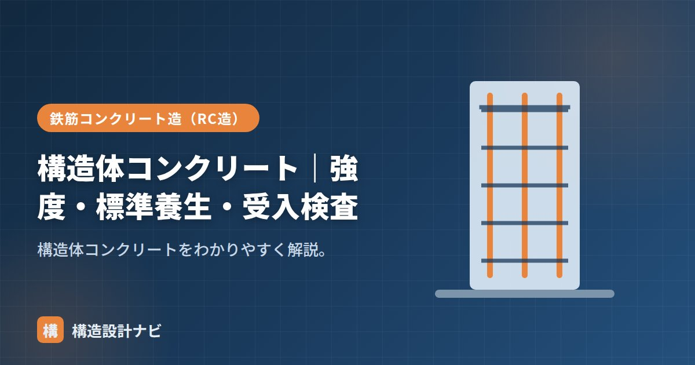

構造体コンクリート｜強度・標準養生・受入検査

構造体コンクリートとは、実際に柱・梁・床などの構造物に打ち込まれて硬化したコンクリートそのものを指します。試験室で作る試験用の供試体と区別して使う言葉で、建物の安全性を最終的に左右するのはこの構造体コンクリートの実力です。設計段階で決めた強度が、現場で打ち込まれたコンクリートでも確保されているかを確認する考え方の土台になります。
- 構造体コンクリートは建物に打ち込まれて硬化した実物のコンクリート。
- 現場環境の影響で標準養生供試体より強度が出にくいため、調合強度に割増しを見込む。
- 受入検査は納入されたコンクリート（配合）の合否判定、構造体強度は別途の供試体や材齢で確認する。
意味
同じ配合のコンクリートでも、試験室で理想的に養生した供試体と、現場の環境で固まった構造体では強度が異なります。構造体コンクリートは、後者＝建物に入った実物のコンクリートです。試験室の供試体は温度・湿度が管理された条件で養生されるのに対し、実際の柱や梁は外気温や風、型枠の断熱性などさまざまな条件の影響を受けながら硬化していきます。この差を理解しておくことが、コンクリート工事の品質管理の出発点になります。
強度（構造体コンクリート強度）
構造体での実際の強度を構造体コンクリート強度といいます。現場の温度・養生の影響を受けるため、これが設計基準強度を満たすように、調合強度には割増し（補正）を見込みます。特に冬季の低温時は水和反応（セメントと水の反応による硬化）が遅く進むため、強度発現も遅れやすく、割増しの量を大きく取る必要があります。詳しい補正の考え方は「構造体強度補正値」で解説しています。
標準養生との関係
| 養生 | 表すもの |
|---|---|
| 標準（水中）養生の供試体 | 配合の実力（材料・配合の判定） |
| 現場水中・封かん養生の供試体 | 構造体コンクリート強度の推定 |
受入検査との関係
生コンの受入検査では、荷卸し地点でスランプ・空気量・温度・塩化物を確認し、強度用の供試体（テストピース）を採取します。これは主に納入されたコンクリート（配合）の合否を見るものです。構造体コンクリート強度は、別途の供試体や材齢で確認します。
受入検査に用いる供試体は、多くの場合、標準養生（水中養生）または現場封かん養生で管理されます。荷卸し時点の性状を確認する受入検査と、実際に打ち込まれた構造物の強度を推定する構造体コンクリート強度の確認は、目的が異なる別々の管理項目として運用される点に注意が必要です。
| 項目 | 目的 | 主な確認内容 |
|---|---|---|
| 受入検査 | 納入された生コン（配合）の合否判定 | スランプ・空気量・温度・塩化物量 |
| 構造体コンクリート強度 | 実際に打ち込まれたコンクリートの強度確認 | 現場水中・封かん養生供試体、材齢による推定 |
受入検査に合格したからといって、構造体コンクリート強度が必ず設計基準強度を満たすとは限りません。現場の養生状況が悪いと、配合上は問題がなくても構造体強度が不足することがあるため、養生管理を怠らないことが重要です。
受入検査に合格した生コンでも、冬場の現場で養生シートの管理が甘いと構造体強度が不足することがあります。私は配合承認の書類だけで安心せず、実際の養生状況を現場立会いで目視確認することを欠かさないようにしています。
供試体と構造体の強度差（図解）
構造体コンクリート強度の確認方法
| 方法 | 内容 | 使う場面 |
|---|---|---|
| 現場水中養生供試体 | 現場の気温の水中で養生した供試体で確認 | 断面が小さく水分が逃げやすい部材 |
| 現場封かん養生供試体 | 密封して現場に置いた供試体で確認 | 断面が大きく水分が保たれる部材 |
| コア採取 | 硬化した構造体から円柱状に切り出して試験 | 疑義が生じた場合の確認、既存建物の調査 |
| 非破壊試験 | テストハンマー（反発度法）、超音波法など | 広範囲のスクリーニング、概略の推定 |
混同されやすいのですが、この2つは目的がまったく違います。受入れ検査（標準水中養生）は「納入されたコンクリートが呼び強度どおりか」を生コン工場に対して確認するもの。構造体強度の確認（現場養生）は「実際の建物のコンクリートが必要な強度を持つか」を施工者が確認するものです。前者が合格でも後者が不合格ということは起こり得ます（養生不良など）。両方を実施して初めて品質が担保されます。
よくある質問
Q1. コア採取はどのように行いますか？
コアドリルで構造体から円柱状にコンクリートを切り出し、圧縮試験を行います。直径は粗骨材最大寸法の3倍以上（一般に100mm程度）、長さは直径の2倍が標準です。採取位置は構造上の影響が小さい箇所を選び、鉄筋を切断しないよう鉄筋探査を行ってから実施します。採取後の穴は無収縮モルタルで確実に埋め戻します。長さと直径の比が2でない場合は補正が必要です。
Q2. テストハンマーでどこまで正確に強度がわかりますか？
あくまで推定値であり、参考程度と考えるべきです。テストハンマー（シュミットハンマー）は表面の反発度から強度を推定する方法で、簡便に広範囲を調べられる利点があります。しかし、表面の含水状態・中性化・仕上げ材の有無・打撃方向などの影響を受けやすく、誤差が大きくなります。判定が必要な場合はコア採取による確認が原則です。
Q3. 構造体強度が不足していた場合はどうしますか？
まず原因の究明と、範囲の特定を行います。養生不良か、材料・配合の問題か、供試体の作製ミスかによって対応が変わります。次にコア採取で実際の強度を確認し、構造安全性の再検討を行います。設計強度を下回っていても、実際の応力に対して余裕があれば許容される場合もあります。安全性が確保できない場合は、炭素繊維シートや鋼板巻きによる補強、最悪の場合は該当部分の解体・打ち直しとなります。
まとめ
- 構造体コンクリートは建物に打ち込まれた実物のコンクリート。
- 現場環境の影響で、標準養生供試体より強度が出にくいため割増しを見込む。
- 受入検査は配合の合否、構造体強度は別の供試体・材齢で確認する。
- 受入検査に合格しても、養生が悪いと構造体強度が不足する場合があるため注意する。